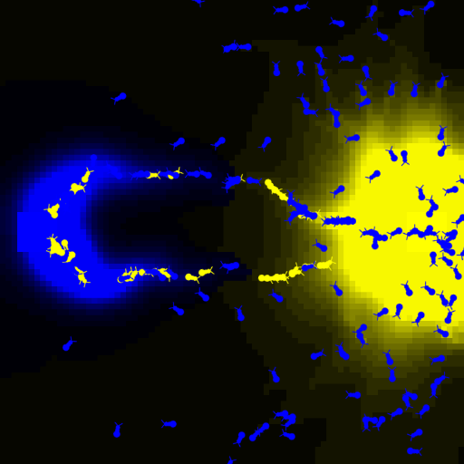
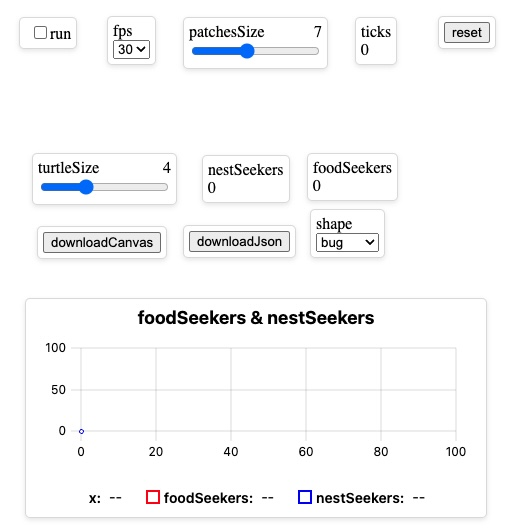
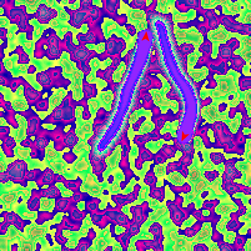
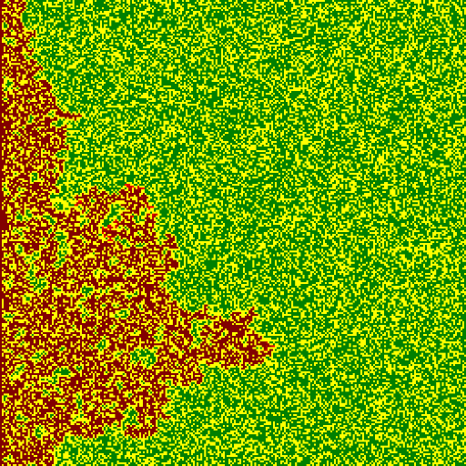
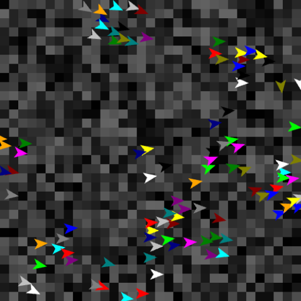
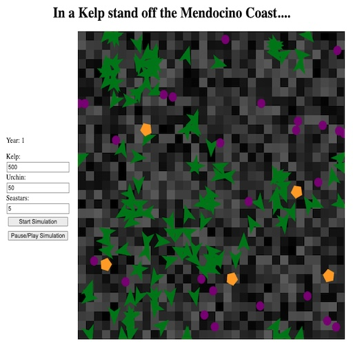
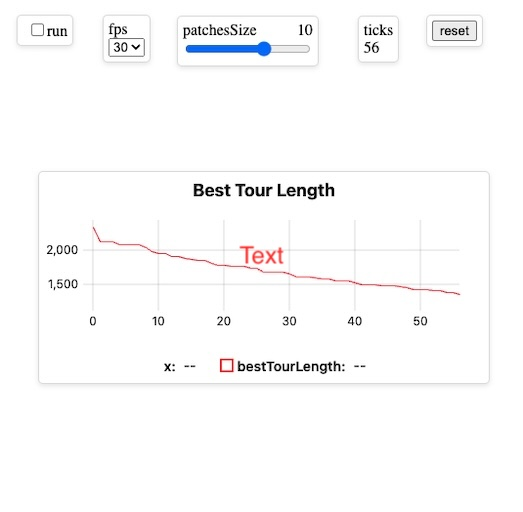
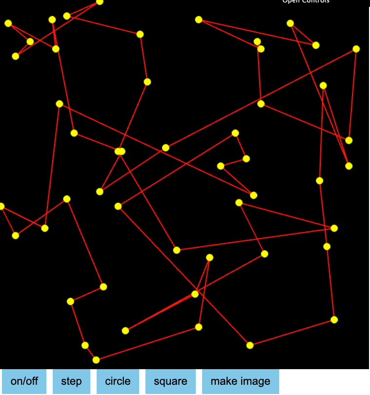

Example Models
This is a template for starting out a new Model from scratch. It has a very simple TemplateModel that shows use of turtles and links, along with an index.html file providing a View and an Animator to run the model.
This is the Template Tutorial which simplifies the beginner's experience by eliminating imports. See the README.md for details.
Ants find the shortest path to food by leaving a trail of evaporating pheromones in their environment. A classic example of stigmergic behavior.
This uses the uielements/ controls to manipulate and view the Ants model properties.
Diffusion is the process by which particles move from an area of higher concentration to an area of lower concentration. Here two turtles travel through patches, dropping a random value on patches and diffusing these values.
Fire spreading on patches based on neighbor probabilities.
How do flocks form without a leader? Craig Reynolds, in 1986, found that three simple rules for individuals birds results in flocking behaviour.

This shows how a Kelp Forest evolves over time, with the interaction between kelp, urchins and sea stars. See the README.md for details.
This is the Kelp Forest with controllers for setting up the initial populations of the kelp, urchins and sea stars with start/pause controls too.

How do many single-celled organisms coordinate to form groups?

The Traveling Sales Person which computes the shortest distance touching each node in a graph.
This uses the uielements/ controls to manipulate and view the TSP model properties.
The Traveling Sales Person which computes the shortest distance touching each node in a graph. This version has several Controllers, the "C" in MVC.